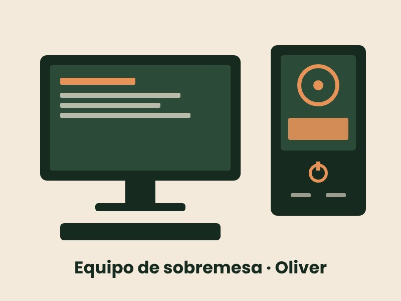

Resumen del equipo

- Nombre del equipo
- Oliver
- Tipo
- Sobremesa (torre ATX) montado por piezas
- Sistema operativo
- Windows 11 Pro, versión 26H2, de 64 bits
- Fecha de instalación del sistema
- 25/11/2024
Componentes
- Placa base
- Gigabyte A520 AORUS ELITE (socket AM4)
- Procesador
- AMD Ryzen 7 3700X: 8 núcleos y 16 hilos, 3,60 GHz de base
- Memoria RAM
- 32 GB DDR4 a 2666 MT/s (2 de 4 ranuras ocupadas)
- Tarjeta gráfica
- NVIDIA GeForce RTX 3060 con 12 GB de memoria dedicada
- Almacenamiento
- SSD NVMe de 1,82 TB (899 GB ocupados)
Caché del procesador
- L1: 512 kB
- L2: 4 MB
- L3: 32 MB
Conectividad
- Ethernet por cable
- Wi-Fi
- Adaptador virtual ZeroTier One (red privada virtual)
Cómo se han obtenido los datos
- Pulsar Windows + I y entrar en Sistema → Información: nombre del equipo, procesador, RAM, gráfica y versión de Windows.
- Abrir el Administrador de tareas con Ctrl + Shift + Esc.
- Ir a la pestaña Rendimiento.
- Consultar las secciones CPU (núcleos y caché), Memoria (velocidad y ranuras), Disco (tipo de SSD) y GPU (memoria dedicada).
Volver al resumen del equipo.